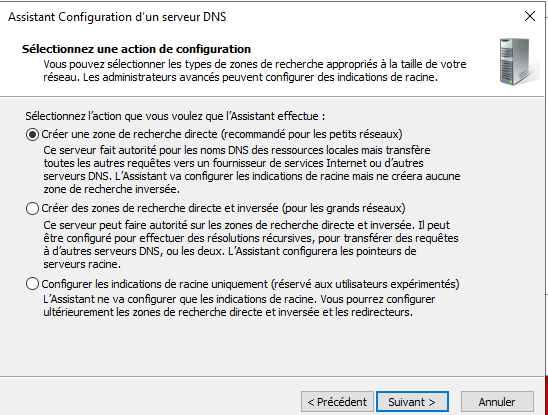
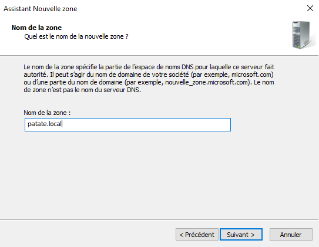
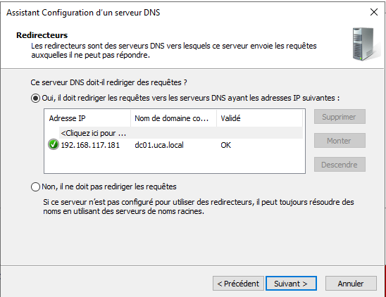
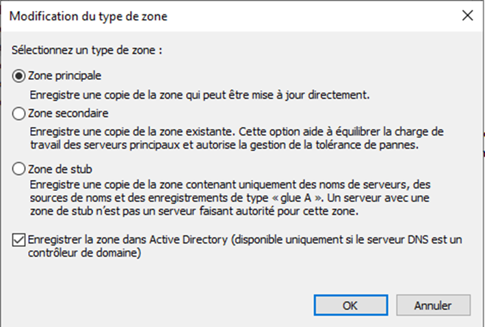

1ère étape : Installation du service DNS
Pour installer le service DNS sur l’Active Directory, suivez les étapes suivantes :
Gérer → Ajout de rôles et de fonctionnalités → Rôles des serveurs → Sélectionner "DNS" → Installer → Redémarrer
2ème étape : Configuration du DNS
Pour configurer le service DNS sur l’Active Directory, suivez les étapes ci-dessous :
Outils → DNS → Cliquez sur le nom du serveur → Configuration d’un serveur DNS, puis suivez les instructions comme sur les captures d’écran ci-dessous :
   